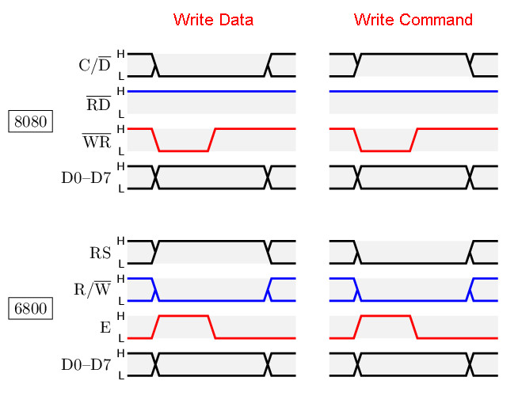
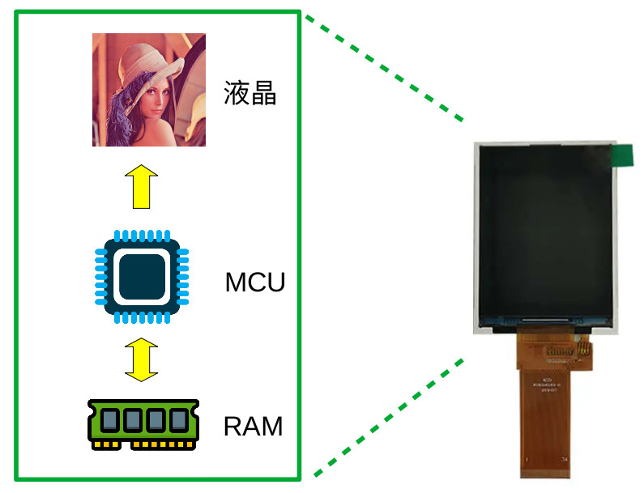
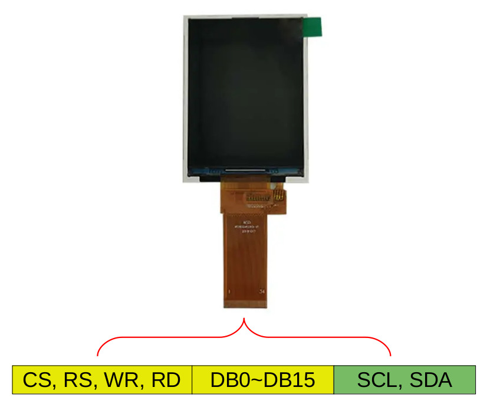
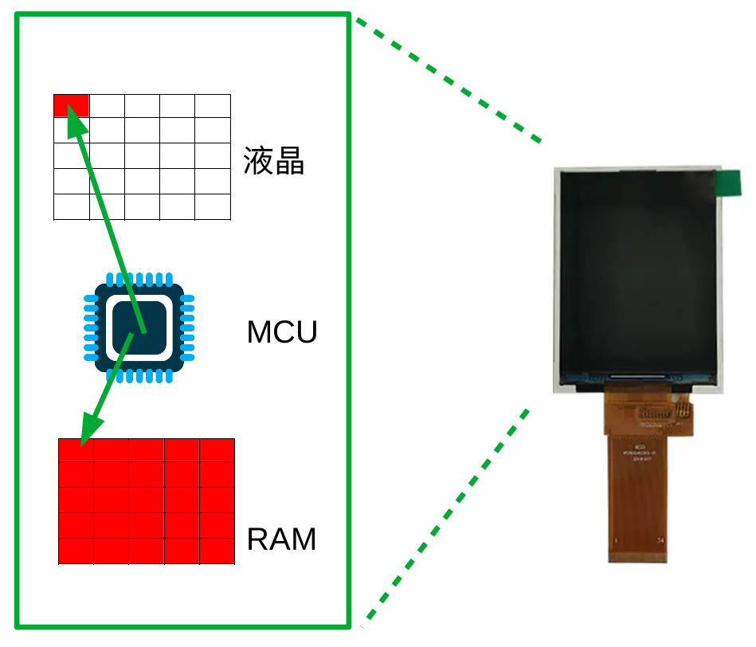
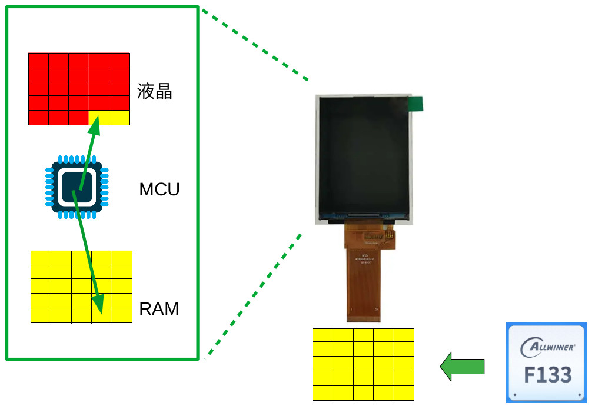
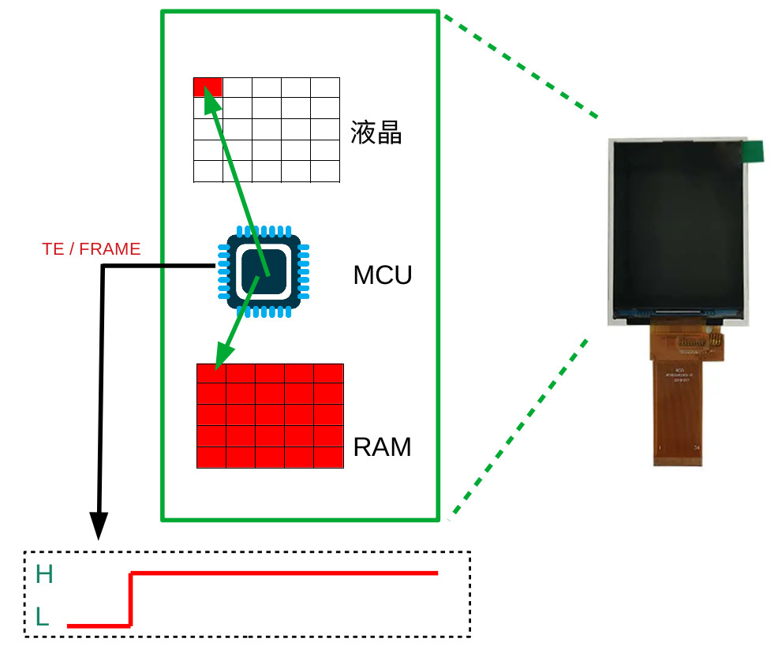
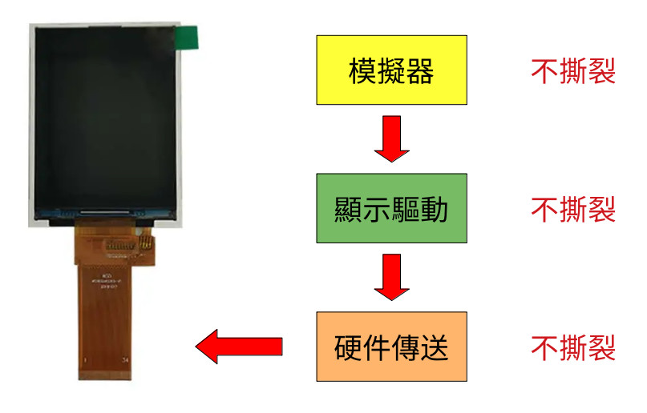
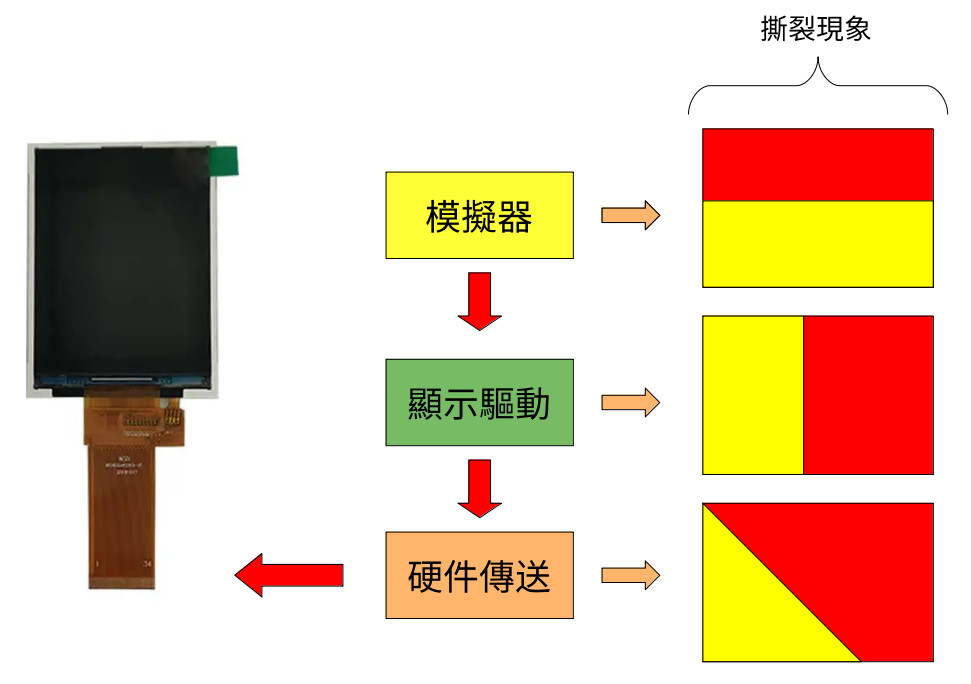

掌機 - Gaviar (小志掌機) - 關於8080屏、i80屏、MCU屏
參考資訊：
https://www.pinteric.com/displays.html
一般常說的8080屏、i80屏、MCU屏，指的就是傳輸資料的方式是使用Intel 8080的讀寫方式，其實早期是有兩大派別，分別是Intel 8080和Motorola 6800，至於為何後來都用Intel 8080，這應該不用多說，8080和6800的格式可以從下圖知曉

那為何gaviar_i80屏需要做初始化呢？因為裡面有專門用來做顯示處理的MCU，因此，需要設定一些參數，如：width=320, height=240, fps=60等參數，所以傳送給屏的資料會分成Data和Command，當然，有些特殊制定規格的屏就不須要初始化，因為參數都已經寫死並且固定在MCU裡，不過，市面上比較難購買到這類產品

MCU在顯示圖像時，會固定從RAM(或稱呼：顯示記憶體、Graphic RAM、GRAM)讀取資料並顯示在屏上面
那該如何初始化呢？目前市面上的屏大約可以分成兩種作法：1. 使用DB0~DB15傳送初始化Data和Command, 2. 使用I2C傳送Data和Command

兩種方式都可以達到初始化的目的，因此，在購買gaviar_i80屏後，記得跟賣家索取初始化命令
那問題來了，當我們正在刷屏(寫入RAM)時，MCU是否有可能正在讀取RAM？答案：沒錯，這種狀況一定會發生，假如寫入跟讀取沒有一個同步機制，那就會發生這種狀況，而這種狀況就是一般俗稱：撕裂、閃屏、Screen Tearing，司徒畫了一張流程圖，下圖是MCU讀取RAM並且顯示在屏上的流程

當F133透過TCON_LCD gaviar_i80介面傳送資料給屏時(黃色的像素)，由於共用同一塊RAM，因此，RAM的內容被更新成黃色，同時，屏的MCU也正在更新圖像到屏上，因此，變成第一個畫面(紅色)和第二個畫面(黃色)的交疊狀況，如下圖

那gaviar_i80屏的撕裂問題如何解決呢？其實，一般gaviar_i80屏都會拉出TE/FRAME腳位，這個腳位一般不使用，因為它跟時序高度相關，需要同步處理，同常TE/FRAME腳位都會懸空，不過，TE/FRAME腳位其實是用來說明屏的MCU是否正在更新圖像(讀取RAM)，因此，為了避免撕裂，F133 TCON_LCD可以在MCU空閒時，傳送更新的資料，這樣就可以避免撕裂

那是不是搞定TE/FRAME腳位後，屏就不會撕裂？答案：不是，因為，從模擬器、顯示驅動到硬件傳送都可能會有撕裂問題，所以要確保顯示品質，任何經過的地方都必須仔細處理才可以保證畫面不撕裂

根據司徒的經驗，在不同地方的所造成的撕裂，將會有不一樣的結果，下圖是司徒整理的有趣現象，模擬器因為是像素更新居多，因此，覆蓋一般是從起始像素開始，所以撕裂比較像是上下分層，而顯示驅動一般使用區塊複製，因此，撕裂是屬於左右分層，屏的撕裂，由於更新跟寫入是屬於追跑的現象，因此，撕裂屬於三角分層
